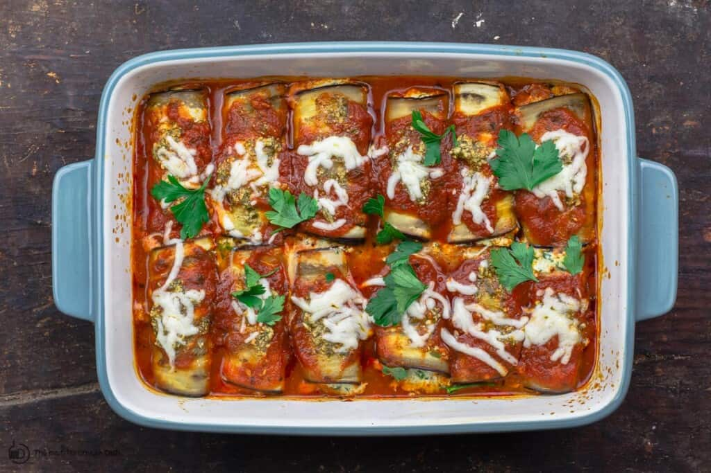

Eggplant Rollatini

Description
Making lasagna can be time-consuming,
but the results are well worth the wait.
You'll find a detailed ingredient list and
step-by-step instructions in the recipe below.
Ingredients
- 2 eggplants
- Salt
- Extra Virgin Olive Oil
For Filling
- 2 eggs beaten
- 1 cup part-skim ricotta cheese
- 1/2 cup part-skim shredded Mozzarella more for later
- 3 tablespoon grated Parmesan
- 2 tablespoon basil pesto homemade or store-bought, more for later
- 1 cup chopped fresh parsley leaves
Steps
- Slice eggplants length-wise into ¼-inch thin slices (it's easier to do this using a mandolin slicer like this one. affiliate link) You should have about 12 slices of similar size (reserve end pieces that are shorter or odd-shaped for another use).
- Sprinkle eggplant slices with salt and set aside on paper towel for 20 minutes. This will help the eggplant sweat out any bitterness. Pat dry. Rinse with water, then dry again.
- Heat oven to 375 degrees F.
- Brush a large baking sheet with extra virgin olive oil. Arrange eggplant slices in one layer on baking sheet. Brush the tops of the eggplant slices with more extra virgin olive oil. Bake in heated oven for 8 minutes or so until soft enough to fold (do not overcook.) Remove from oven and set aside briefly to cool. (Leave the oven on for the rollatini)
- Meanwhile, prepare the filling. In a bowl, add eggs, ricotta, Mozzarella, grated Parmesan, basil pesto, and fresh parsley. Mix until well-combined.
- Spread about 3/4 cup marinara sauce on the bottom of a 9 1/2" x 13" baking dish.
- Spoon about 2 tablespoon of the filling onto one end of each eggplant slice, and spread. Starting from the short end, roll up eggplant slices tightly and arranged on prepared baking dish.
- Top eggplant rollatini with the remainder of the marinara sauce, more basil pesto, and a sprinkle of mozzarella. Bake in heated oven for 30 minutes or until the eggplant rollatini are fully cooked and tender.
- Remove from oven and let sit for 10 minutes or so before serving.